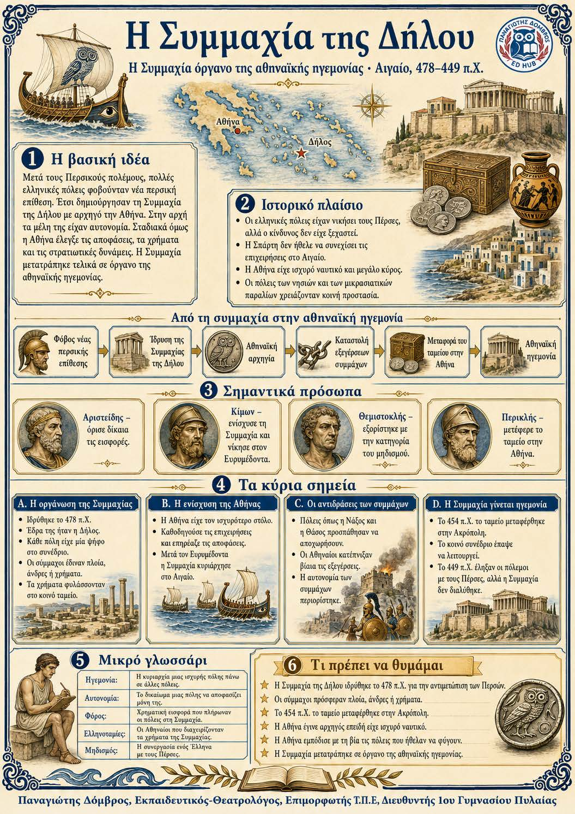

Πληροφοριογράφημα ενότητας
Το πληροφοριογράφημα αυτής της ενότητας δεν έχει ανέβει ακόμη. Οι σημειώσεις παραμένουν πλήρως διαθέσιμες.

Αιγαίο, 478–449 π.Χ.
Μετά τους Περσικούς πολέμους, πολλές ελληνικές πόλεις φοβούνταν μια νέα περσική επίθεση. Έτσι δημιούργησαν τη Συμμαχία της Δήλου με αρχηγό την Αθήνα. Στην αρχή, τα μέλη της διατηρούσαν την αυτονομία τους. Σταδιακά, όμως, η Αθήνα άρχισε να ελέγχει τις αποφάσεις, τα χρήματα και τις στρατιωτικές δυνάμεις. Η συμμαχία μετατράπηκε τελικά σε όργανο της αθηναϊκής κυριαρχίας.
Φόβος νέας περσικής επίθεσης ↓ Ίδρυση της Συμμαχίας της Δήλου ↓ Αθηναϊκή αρχηγία και ισχυρό ναυτικό ↓ Καταστολή των εξεγέρσεων των συμμάχων ↓ Μεταφορά του ταμείου στην Αθήνα ↓ Αθηναϊκή ηγεμονία
